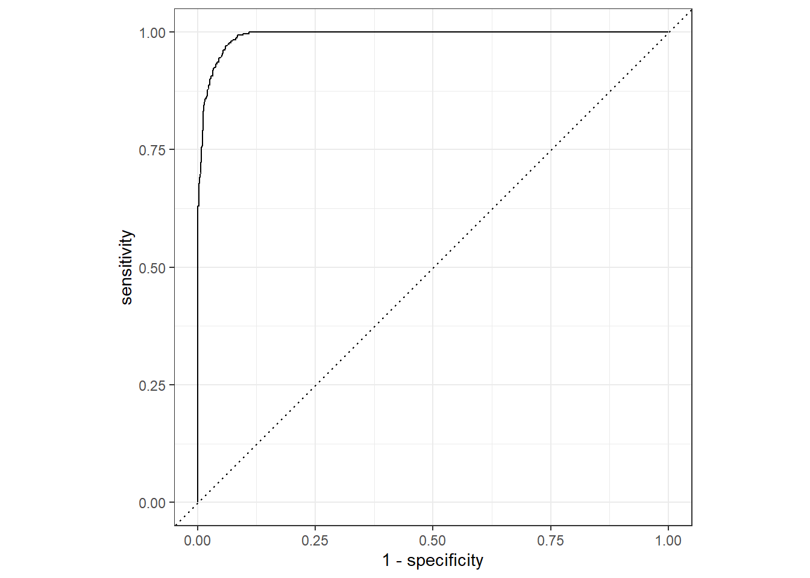
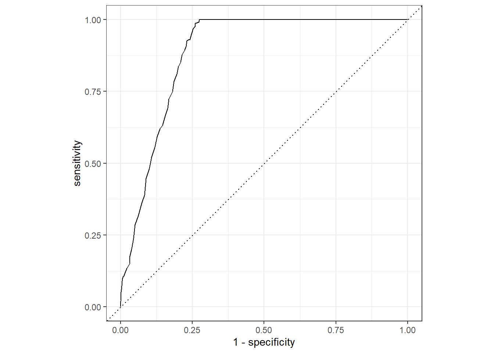
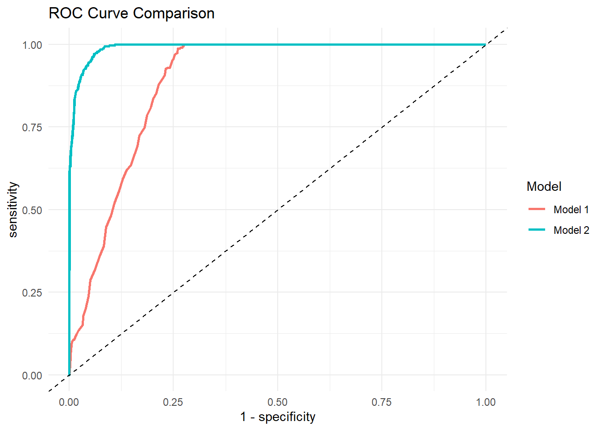
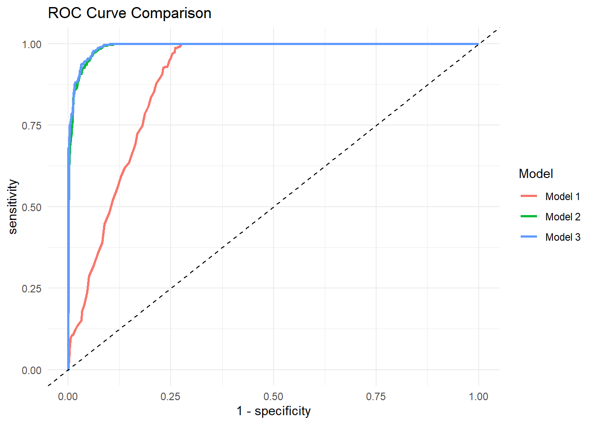

# Load required libraries
library(tidyverse)
library(tidymodels)
library(here)
set.seed(1234)Part 4 Models
This analysis was conducted using R and the tidymodels framework to evaluate predictive models for lung cancer risk. The workflow includes data preprocessing, model training, evaluation, and comparison across multiple models.
To ensure reproducibility:
- Data were split into training (75%) and testing (25%) sets using stratified sampling based on the outcome variable.
- Models were trained exclusively on the training data and evaluated on an independent test set.
- Model performance was assessed using accuracy, sensitivity, specificity, and area under the ROC curve (AUC).
- 5-fold cross-validation was used to estimate model stability.
- All code, data paths, and outputs are organized using a structured project directory via the
here()package.
The analysis includes three models: 1. Age + Smoking Status 2. Age + Pack-Years (smoking exposure over time) 3. Age + Pack-Years + COPD
In addition, a LASSO model was implemented to evaluate the effect of regularization and compare predictive performance with the logistic regression models.
All results, tables, and figures can be reproduced by running this document from start to finish.
lung_data <- readr::read_csv(
here("data", "processed-data", "lung_clean.csv")
)# Inspect structure and basic distributions
glimpse(lung_data)Rows: 5,000
Columns: 31
$ age <dbl> 60, 53, 62, 73, 52, 52, 73, 64, 49, 61, 49, 49…
$ gender <dbl> 1, 0, 1, 1, 1, 0, 1, 1, 1, 0, 0, 1, 0, 1, 0, 0…
$ education_years <dbl> 20, 12, 15, 12, 13, 10, 12, 13, 10, 11, 11, 14…
$ income_level <dbl> 2, 4, 3, 3, 1, 2, 2, 3, 3, 4, 3, 1, 3, 1, 2, 2…
$ smoker <chr> "Smoker", "Non-smoker", "Smoker", "Non-smoker"…
$ smoking_years <dbl> 16, 0, 9, 0, 0, 0, 0, 0, 29, 0, 33, 0, 0, 0, 0…
$ cigarettes_per_day <dbl> 15, 0, 29, 0, 0, 0, 0, 0, 18, 0, 17, 0, 0, 0, …
$ pack_years <dbl> 12, 0, 13, 0, 0, 0, 0, 0, 26, 0, 28, 0, 0, 0, …
$ passive_smoking <dbl> 0, 1, 1, 0, 0, 0, 0, 0, 1, 0, 0, 0, 0, 0, 0, 0…
$ air_pollution_index <dbl> 71, 66, 69, 47, 94, 55, 88, 127, 47, 71, 62, 1…
$ occupational_exposure <dbl> 0, 0, 0, 0, 1, 0, 0, 0, 0, 0, 0, 0, 0, 1, 0, 0…
$ radon_exposure <dbl> 1, 0, 0, 0, 0, 1, 0, 0, 0, 1, 0, 1, 0, 0, 0, 0…
$ family_history_cancer <dbl> 0, 1, 0, 0, 0, 0, 1, 0, 0, 0, 1, 0, 1, 0, 1, 0…
$ copd <chr> "No", "No", "No", "No", "No", "No", "No", "No"…
$ asthma <dbl> 0, 0, 1, 0, 0, 0, 0, 0, 0, 0, 0, 0, 0, 0, 0, 1…
$ previous_tb <dbl> 0, 0, 0, 0, 0, 0, 0, 1, 0, 0, 1, 0, 0, 0, 0, 0…
$ chronic_cough <dbl> 1, 0, 0, 0, 0, 0, 0, 0, 1, 0, 1, 0, 0, 0, 0, 0…
$ chest_pain <dbl> 1, 1, 0, 0, 0, 0, 0, 0, 0, 0, 0, 0, 1, 0, 1, 0…
$ shortness_of_breath <dbl> 1, 0, 1, 0, 0, 0, 0, 0, 1, 0, 1, 0, 0, 0, 0, 1…
$ fatigue <dbl> 0, 0, 1, 0, 0, 0, 1, 0, 0, 1, 0, 1, 1, 0, 0, 0…
$ bmi <dbl> 20, 25, 23, 18, 16, 27, 21, 24, 31, 26, 16, 19…
$ oxygen_saturation <dbl> 94, 96, 95, 96, 97, 99, 98, 98, 91, 97, 87, 97…
$ fev1_x10 <dbl> 29, 35, 29, 32, 36, 32, 36, 37, 20, 35, 19, 37…
$ crp_level <dbl> 6, 4, 9, 0, 8, 5, 2, 1, 17, 3, 15, 2, 3, 3, 7,…
$ xray_abnormal <dbl> 1, 0, 1, 0, 0, 0, 0, 0, 0, 0, 1, 0, 0, 0, 0, 0…
$ exercise_hours_per_week <dbl> 5, 5, 1, 0, 6, 1, 2, 1, 2, 1, 4, 4, 0, 0, 0, 1…
$ diet_quality <dbl> 4, 2, 4, 3, 2, 3, 4, 1, 3, 1, 2, 1, 5, 3, 1, 2…
$ alcohol_units_per_week <dbl> 13, 0, 2, 10, 9, 8, 4, 11, 9, 12, 5, 9, 13, 15…
$ healthcare_access <dbl> 3, 3, 1, 4, 2, 2, 3, 2, 2, 2, 2, 4, 3, 4, 2, 2…
$ lung_cancer_risk <chr> "Yes", "No", "Yes", "No", "No", "No", "No", "N…
$ pack_group <chr> "High pack-years", "Low pack-years", "High pac…table(lung_data$lung_cancer_risk)
No Yes
3756 1244 table(lung_data$smoker)
Non-smoker Smoker
2726 2274 table(lung_data$copd)
No Yes
4203 797 # Convert categorical variables to factors for modeling
lung_data <- lung_data %>%
mutate(
lung_cancer_risk = factor(lung_cancer_risk),
smoker = factor(smoker),
copd = factor(copd)
)glimpse(lung_data)Rows: 5,000
Columns: 31
$ age <dbl> 60, 53, 62, 73, 52, 52, 73, 64, 49, 61, 49, 49…
$ gender <dbl> 1, 0, 1, 1, 1, 0, 1, 1, 1, 0, 0, 1, 0, 1, 0, 0…
$ education_years <dbl> 20, 12, 15, 12, 13, 10, 12, 13, 10, 11, 11, 14…
$ income_level <dbl> 2, 4, 3, 3, 1, 2, 2, 3, 3, 4, 3, 1, 3, 1, 2, 2…
$ smoker <fct> Smoker, Non-smoker, Smoker, Non-smoker, Non-sm…
$ smoking_years <dbl> 16, 0, 9, 0, 0, 0, 0, 0, 29, 0, 33, 0, 0, 0, 0…
$ cigarettes_per_day <dbl> 15, 0, 29, 0, 0, 0, 0, 0, 18, 0, 17, 0, 0, 0, …
$ pack_years <dbl> 12, 0, 13, 0, 0, 0, 0, 0, 26, 0, 28, 0, 0, 0, …
$ passive_smoking <dbl> 0, 1, 1, 0, 0, 0, 0, 0, 1, 0, 0, 0, 0, 0, 0, 0…
$ air_pollution_index <dbl> 71, 66, 69, 47, 94, 55, 88, 127, 47, 71, 62, 1…
$ occupational_exposure <dbl> 0, 0, 0, 0, 1, 0, 0, 0, 0, 0, 0, 0, 0, 1, 0, 0…
$ radon_exposure <dbl> 1, 0, 0, 0, 0, 1, 0, 0, 0, 1, 0, 1, 0, 0, 0, 0…
$ family_history_cancer <dbl> 0, 1, 0, 0, 0, 0, 1, 0, 0, 0, 1, 0, 1, 0, 1, 0…
$ copd <fct> No, No, No, No, No, No, No, No, Yes, No, No, N…
$ asthma <dbl> 0, 0, 1, 0, 0, 0, 0, 0, 0, 0, 0, 0, 0, 0, 0, 1…
$ previous_tb <dbl> 0, 0, 0, 0, 0, 0, 0, 1, 0, 0, 1, 0, 0, 0, 0, 0…
$ chronic_cough <dbl> 1, 0, 0, 0, 0, 0, 0, 0, 1, 0, 1, 0, 0, 0, 0, 0…
$ chest_pain <dbl> 1, 1, 0, 0, 0, 0, 0, 0, 0, 0, 0, 0, 1, 0, 1, 0…
$ shortness_of_breath <dbl> 1, 0, 1, 0, 0, 0, 0, 0, 1, 0, 1, 0, 0, 0, 0, 1…
$ fatigue <dbl> 0, 0, 1, 0, 0, 0, 1, 0, 0, 1, 0, 1, 1, 0, 0, 0…
$ bmi <dbl> 20, 25, 23, 18, 16, 27, 21, 24, 31, 26, 16, 19…
$ oxygen_saturation <dbl> 94, 96, 95, 96, 97, 99, 98, 98, 91, 97, 87, 97…
$ fev1_x10 <dbl> 29, 35, 29, 32, 36, 32, 36, 37, 20, 35, 19, 37…
$ crp_level <dbl> 6, 4, 9, 0, 8, 5, 2, 1, 17, 3, 15, 2, 3, 3, 7,…
$ xray_abnormal <dbl> 1, 0, 1, 0, 0, 0, 0, 0, 0, 0, 1, 0, 0, 0, 0, 0…
$ exercise_hours_per_week <dbl> 5, 5, 1, 0, 6, 1, 2, 1, 2, 1, 4, 4, 0, 0, 0, 1…
$ diet_quality <dbl> 4, 2, 4, 3, 2, 3, 4, 1, 3, 1, 2, 1, 5, 3, 1, 2…
$ alcohol_units_per_week <dbl> 13, 0, 2, 10, 9, 8, 4, 11, 9, 12, 5, 9, 13, 15…
$ healthcare_access <dbl> 3, 3, 1, 4, 2, 2, 3, 2, 2, 2, 2, 4, 3, 4, 2, 2…
$ lung_cancer_risk <fct> Yes, No, Yes, No, No, No, No, No, Yes, No, Yes…
$ pack_group <chr> "High pack-years", "Low pack-years", "High pac…set.seed(1234)
# Split data into training (75%) and testing (25%) sets
data_split <- initial_split(
lung_data,
prop = 0.75,
strata = lung_cancer_risk
)
train_data <- training(data_split)
test_data <- testing(data_split)nrow(train_data)[1] 3750nrow(test_data)[1] 1250table(train_data$lung_cancer_risk)
No Yes
2817 933 table(test_data$lung_cancer_risk)
No Yes
939 311 # Define logistic regression model for classification
log_model <- logistic_reg() %>%
set_engine("glm") %>%
set_mode("classification")# Build workflow using age and smoking status as predictors
log_workflow <- workflow() %>%
add_model(log_model) %>%
add_formula(lung_cancer_risk ~ age + smoker)# Fit model on training data
log_fit <- fit(log_workflow, data = train_data)tidy(log_fit)# A tibble: 3 × 5
term estimate std.error statistic p.value
<chr> <dbl> <dbl> <dbl> <dbl>
1 (Intercept) -21.0 236. -0.0889 0.929
2 age 0.0255 0.00432 5.89 0.00000000378
3 smokerSmoker 19.8 236. 0.0838 0.933 # Generate class predictions and probabilities on test data
test_pred_class <- predict(log_fit, new_data = test_data)
test_pred_prob <- predict(log_fit, new_data = test_data, type = "prob")test_results <- bind_cols(
test_data %>% select(lung_cancer_risk),
test_pred_class,
test_pred_prob
)head(test_results)# A tibble: 6 × 4
lung_cancer_risk .pred_class .pred_No .pred_Yes
<fct> <fct> <dbl> <dbl>
1 No No 1.000 0.00000000296
2 Yes Yes 0.406 0.594
3 Yes Yes 0.488 0.512
4 No No 1.000 0.00000000267
5 No No 1.000 0.00000000336
6 No No 1.000 0.00000000288# Evaluate model performance using accuracy and confusion matrix
accuracy(test_results, truth = lung_cancer_risk, estimate = .pred_class)# A tibble: 1 × 3
.metric .estimator .estimate
<chr> <chr> <dbl>
1 accuracy binary 0.806conf_mat(test_results, truth = lung_cancer_risk, estimate = .pred_class) Truth
Prediction No Yes
No 764 67
Yes 175 244# Compute sensitivity and specificity
sens(test_results, truth = lung_cancer_risk, estimate = .pred_class)# A tibble: 1 × 3
.metric .estimator .estimate
<chr> <chr> <dbl>
1 sens binary 0.814spec(test_results, truth = lung_cancer_risk, estimate = .pred_class)# A tibble: 1 × 3
.metric .estimator .estimate
<chr> <chr> <dbl>
1 spec binary 0.785# Compute AUC
roc_auc(
test_results,
truth = lung_cancer_risk,
.pred_Yes,
event_level = "second"
)# A tibble: 1 × 3
.metric .estimator .estimate
<chr> <chr> <dbl>
1 roc_auc binary 0.886# Generate ROC curve data and plot
roc_curve_data <- roc_curve(
test_results,
truth = lung_cancer_risk,
.pred_Yes,
event_level = "second"
)
autoplot(roc_curve_data)
# Perform 5-fold cross-validation on training data
cv_folds <- vfold_cv(
train_data,
v = 5,
strata = lung_cancer_risk
)
cv_folds# 5-fold cross-validation using stratification
# A tibble: 5 × 2
splits id
<list> <chr>
1 <split [2999/751]> Fold1
2 <split [2999/751]> Fold2
3 <split [3000/750]> Fold3
4 <split [3001/749]> Fold4
5 <split [3001/749]> Fold5# Fit model across folds and compute metrics
cv_results_model1 <- fit_resamples(
log_workflow,
resamples = cv_folds,
metrics = metric_set(accuracy, sens, spec)
)collect_metrics(cv_results_model1)# A tibble: 3 × 6
.metric .estimator mean n std_err .config
<chr> <chr> <dbl> <int> <dbl> <chr>
1 accuracy binary 0.810 5 0.00515 pre0_mod0_post0
2 sens binary 0.810 5 0.00561 pre0_mod0_post0
3 spec binary 0.808 5 0.0163 pre0_mod0_post0# Build second model using cumulative smoking exposure (pack-years)
log_workflow_pack <- workflow() %>%
add_model(log_model) %>%
add_formula(lung_cancer_risk ~ age + pack_years)# Fit model
log_fit_pack <- fit(log_workflow_pack, data = train_data)tidy(log_fit_pack)# A tibble: 3 × 5
term estimate std.error statistic p.value
<chr> <dbl> <dbl> <dbl> <dbl>
1 (Intercept) -10.1 0.611 -16.5 3.92e- 61
2 age 0.0800 0.00845 9.47 2.74e- 21
3 pack_years 0.521 0.0218 23.9 9.59e-127# Generate predictions for Model 2
test_pred_class_pack <- predict(log_fit_pack, new_data = test_data)
test_pred_prob_pack <- predict(log_fit_pack, new_data = test_data, type = "prob")# Combine results
test_results_pack <- bind_cols(
test_data %>% select(lung_cancer_risk),
test_pred_class_pack,
test_pred_prob_pack
)# Evaluate performance
accuracy(test_results_pack, truth = lung_cancer_risk, estimate = .pred_class)# A tibble: 1 × 3
.metric .estimator .estimate
<chr> <chr> <dbl>
1 accuracy binary 0.954sens(test_results_pack, truth = lung_cancer_risk, estimate = .pred_class)# A tibble: 1 × 3
.metric .estimator .estimate
<chr> <chr> <dbl>
1 sens binary 0.968spec(test_results_pack, truth = lung_cancer_risk, estimate = .pred_class)# A tibble: 1 × 3
.metric .estimator .estimate
<chr> <chr> <dbl>
1 spec binary 0.910roc_auc(
test_results_pack,
truth = lung_cancer_risk,
.pred_Yes,
event_level = "second"
)# A tibble: 1 × 3
.metric .estimator .estimate
<chr> <chr> <dbl>
1 roc_auc binary 0.992roc_curve_data_pack <- roc_curve(
test_results_pack,
truth = lung_cancer_risk,
.pred_Yes,
event_level = "second"
)
autoplot(roc_curve_data_pack)
cv_results_model2 <- fit_resamples(
log_workflow_pack,
resamples = cv_folds,
metrics = metric_set(accuracy, sens, spec)
)
collect_metrics(cv_results_model2)# A tibble: 3 × 6
.metric .estimator mean n std_err .config
<chr> <chr> <dbl> <int> <dbl> <chr>
1 accuracy binary 0.949 5 0.00378 pre0_mod0_post0
2 sens binary 0.968 5 0.00371 pre0_mod0_post0
3 spec binary 0.891 5 0.0128 pre0_mod0_post0acc_m1 <- accuracy(test_results, truth = lung_cancer_risk, estimate = .pred_class) %>% pull(.estimate)
sens_m1 <- sens(test_results, truth = lung_cancer_risk, estimate = .pred_class) %>% pull(.estimate)
spec_m1 <- spec(test_results, truth = lung_cancer_risk, estimate = .pred_class) %>% pull(.estimate)
auc_m1 <- roc_auc(test_results, truth = lung_cancer_risk, .pred_Yes, event_level = "second") %>% pull(.estimate)
acc_m2 <- accuracy(test_results_pack, truth = lung_cancer_risk, estimate = .pred_class) %>% pull(.estimate)
sens_m2 <- sens(test_results_pack, truth = lung_cancer_risk, estimate = .pred_class) %>% pull(.estimate)
spec_m2 <- spec(test_results_pack, truth = lung_cancer_risk, estimate = .pred_class) %>% pull(.estimate)
auc_m2 <- roc_auc(test_results_pack, truth = lung_cancer_risk, .pred_Yes, event_level = "second") %>% pull(.estimate)cv_m1 <- collect_metrics(cv_results_model1)
cv_m2 <- collect_metrics(cv_results_model2)cv_acc_m1 <- cv_m1 %>% filter(.metric == "accuracy") %>% pull(mean)
cv_sens_m1 <- cv_m1 %>% filter(.metric == "sens") %>% pull(mean)
cv_spec_m1 <- cv_m1 %>% filter(.metric == "spec") %>% pull(mean)
cv_acc_m2 <- cv_m2 %>% filter(.metric == "accuracy") %>% pull(mean)
cv_sens_m2 <- cv_m2 %>% filter(.metric == "sens") %>% pull(mean)
cv_spec_m2 <- cv_m2 %>% filter(.metric == "spec") %>% pull(mean)# Create summary table comparing both models (test + CV performance)
model_comparison <- tibble(
Model = c("Age + smoker", "Age + pack_years"),
Test_Accuracy = c(acc_m1, acc_m2),
Test_Sensitivity = c(sens_m1, sens_m2),
Test_Specificity = c(spec_m1, spec_m2),
Test_AUC = c(auc_m1, auc_m2),
CV_Accuracy = c(cv_acc_m1, cv_acc_m2),
CV_Sensitivity = c(cv_sens_m1, cv_sens_m2),
CV_Specificity = c(cv_spec_m1, cv_spec_m2)
)
model_comparison# A tibble: 2 × 8
Model Test_Accuracy Test_Sensitivity Test_Specificity Test_AUC CV_Accuracy
<chr> <dbl> <dbl> <dbl> <dbl> <dbl>
1 Age + sm… 0.806 0.814 0.785 0.886 0.810
2 Age + pa… 0.954 0.968 0.910 0.992 0.949
# ℹ 2 more variables: CV_Sensitivity <dbl>, CV_Specificity <dbl># Save full comparison table
write.csv(
model_comparison,
here("results", "tables", "model_comparison.csv"),
row.names = FALSE
)model_comparison_clean <- model_comparison %>%
mutate(
Model = c("Age + Smoking Status", "Age + Pack-Years")
) %>%
mutate(across(where(is.numeric), ~ round(.x, 3)))
# Save cleaned (rounded) version for reporting
write.csv(
model_comparison_clean,
here("results", "tables", "model_comparison_clean.csv"),
row.names = FALSE
)model_summary_table <- tibble(
Model = c("Age + Smoking Status", "Age + Pack-Years"),
Accuracy = c(acc_m1, acc_m2),
Sensitivity = c(sens_m1, sens_m2),
Specificity = c(spec_m1, spec_m2),
AUC = c(auc_m1, auc_m2)
) %>%
mutate(across(where(is.numeric), ~ round(.x, 3)))
# Save final summary table as RDS
saveRDS(
model_summary_table,
here("results", "tables", "model_summary_table.rds")
)model_summary_table# A tibble: 2 × 5
Model Accuracy Sensitivity Specificity AUC
<chr> <dbl> <dbl> <dbl> <dbl>
1 Age + Smoking Status 0.806 0.814 0.785 0.886
2 Age + Pack-Years 0.954 0.968 0.91 0.992# Save ROC curves for each model and combined comparison
roc_plot_m1 <- autoplot(roc_curve_data)
roc_plot_m1
ggsave(
filename = here("results", "figures", "roc_model1.png"),
plot = roc_plot_m1,
width = 6,
height = 5
)
roc_plot_m2 <- autoplot(roc_curve_data_pack)
roc_plot_m2
ggsave(
filename = here("results", "figures", "roc_model2.png"),
plot = roc_plot_m2,
width = 6,
height = 5
)
roc_curve_data$model <- "Model 1"
roc_curve_data_pack$model <- "Model 2"
roc_combined <- bind_rows(roc_curve_data, roc_curve_data_pack)
ggplot(roc_combined, aes(x = 1 - specificity, y = sensitivity, color = model)) +
geom_line(linewidth = 1) +
geom_abline(lty = 2) +
labs(title = "ROC Curve Comparison", color = "Model") +
theme_minimal()
ggsave(
here("results", "figures", "roc_comparison.png"),
width = 6,
height = 5
)# Model 3: include COPD
log_workflow_copd <- workflow() %>%
add_model(log_model) %>%
add_formula(lung_cancer_risk ~ age + pack_years + copd)
# Fit model
log_fit_copd <- fit(log_workflow_copd, data = train_data)tidy(log_fit_copd)# A tibble: 4 × 5
term estimate std.error statistic p.value
<chr> <dbl> <dbl> <dbl> <dbl>
1 (Intercept) -10.8 0.666 -16.2 2.91e- 59
2 age 0.0877 0.00903 9.72 2.49e- 22
3 pack_years 0.507 0.0228 22.2 1.43e-109
4 copdYes 1.61 0.215 7.51 5.89e- 14test_pred_class_copd <- predict(log_fit_copd, new_data = test_data)
test_pred_prob_copd <- predict(log_fit_copd, new_data = test_data, type = "prob")
test_results_copd <- bind_cols(
test_data %>% select(lung_cancer_risk),
test_pred_class_copd,
test_pred_prob_copd
)# Check results
head(test_results_copd)# A tibble: 6 × 4
lung_cancer_risk .pred_class .pred_No .pred_Yes
<fct> <fct> <dbl> <dbl>
1 No No 0.998 0.00210
2 Yes Yes 0.227 0.773
3 Yes Yes 0.000251 1.000
4 No No 0.999 0.00148
5 No No 0.997 0.00326
6 No No 0.998 0.00193# Evaluate test-set performance
# Accuracy
accuracy(test_results_copd, truth = lung_cancer_risk, estimate = .pred_class)# A tibble: 1 × 3
.metric .estimator .estimate
<chr> <chr> <dbl>
1 accuracy binary 0.955# Sensitivity
sens(test_results_copd, truth = lung_cancer_risk, estimate = .pred_class)# A tibble: 1 × 3
.metric .estimator .estimate
<chr> <chr> <dbl>
1 sens binary 0.972# Specificity
spec(test_results_copd, truth = lung_cancer_risk, estimate = .pred_class)# A tibble: 1 × 3
.metric .estimator .estimate
<chr> <chr> <dbl>
1 spec binary 0.904# AUC
roc_auc(
test_results_copd,
truth = lung_cancer_risk,
.pred_Yes,
event_level = "second"
)# A tibble: 1 × 3
.metric .estimator .estimate
<chr> <chr> <dbl>
1 roc_auc binary 0.993# Confusion matrix
conf_mat(test_results_copd, truth = lung_cancer_risk, estimate = .pred_class) Truth
Prediction No Yes
No 913 30
Yes 26 281cv_results_model3 <- fit_resamples(
log_workflow_copd,
resamples = cv_folds,
metrics = metric_set(accuracy, sens, spec)
)
collect_metrics(cv_results_model3)# A tibble: 3 × 6
.metric .estimator mean n std_err .config
<chr> <chr> <dbl> <int> <dbl> <chr>
1 accuracy binary 0.955 5 0.00315 pre0_mod0_post0
2 sens binary 0.972 5 0.00235 pre0_mod0_post0
3 spec binary 0.904 5 0.0106 pre0_mod0_post0# Extract Model 3 test metrics
acc_m3 <- accuracy(test_results_copd, truth = lung_cancer_risk, estimate = .pred_class) %>% pull(.estimate)
sens_m3 <- sens(test_results_copd, truth = lung_cancer_risk, estimate = .pred_class) %>% pull(.estimate)
spec_m3 <- spec(test_results_copd, truth = lung_cancer_risk, estimate = .pred_class) %>% pull(.estimate)
auc_m3 <- roc_auc(test_results_copd, truth = lung_cancer_risk, .pred_Yes, event_level = "second") %>% pull(.estimate)
# Create 3-model comparison table (with Sensitivity)
model_comparison_3 <- tibble(
Model = c("Age + Smoking Status", "Age + Pack-Years", "Age + Pack-Years + COPD"),
Accuracy = c(acc_m1, acc_m2, acc_m3),
Sensitivity = c(sens_m1, sens_m2, sens_m3),
Specificity = c(spec_m1, spec_m2, spec_m3),
AUC = c(auc_m1, auc_m2, auc_m3)
) %>%
mutate(across(where(is.numeric), ~ round(.x, 3)))
# Show table
model_comparison_3# A tibble: 3 × 5
Model Accuracy Sensitivity Specificity AUC
<chr> <dbl> <dbl> <dbl> <dbl>
1 Age + Smoking Status 0.806 0.814 0.785 0.886
2 Age + Pack-Years 0.954 0.968 0.91 0.992
3 Age + Pack-Years + COPD 0.955 0.972 0.904 0.993# Save CSV
write.csv(
model_comparison_3,
here("results", "tables", "model_comparison_3.csv"),
row.names = FALSE
)
# Save RDS
saveRDS(
model_comparison_3,
here("results", "tables", "model_comparison_3.rds")
)# Add model labels
roc_curve_data$model <- "Model 1"
roc_curve_data_pack$model <- "Model 2"
# Create ROC for Model 3
roc_curve_data_copd <- roc_curve(
test_results_copd,
truth = lung_cancer_risk,
.pred_Yes,
event_level = "second"
)
roc_curve_data_copd$model <- "Model 3"
# Combine all three
roc_combined <- bind_rows(
roc_curve_data,
roc_curve_data_pack,
roc_curve_data_copd
)
# Plot
ggplot(roc_combined, aes(x = 1 - specificity, y = sensitivity, color = model)) +
geom_line(linewidth = 1) +
geom_abline(lty = 2) +
labs(title = "ROC Curve Comparison", color = "Model") +
theme_minimal()
# Save
ggsave(
here("results", "figures", "roc_comparison_3models.png"),
width = 6,
height = 5
)# ===============================
# LASSO MODEL (based on Model 3)
# ===============================
library(glmnet)
# Define LASSO model
lasso_model <- logistic_reg(penalty = tune(), mixture = 1) %>%
set_engine("glmnet") %>%
set_mode("classification")
# Workflow (same predictors as Model 3)
lasso_workflow <- workflow() %>%
add_model(lasso_model) %>%
add_formula(lung_cancer_risk ~ age + pack_years + copd)
# ===============================
# Tuning with Cross-Validation
# ===============================
set.seed(1234)
lasso_tuned <- tune_grid(
lasso_workflow,
resamples = cv_folds, # same CV you already created
grid = 10,
metrics = metric_set(accuracy, roc_auc)
)
# View results
collect_metrics(lasso_tuned)# A tibble: 20 × 7
penalty .metric .estimator mean n std_err .config
<dbl> <chr> <chr> <dbl> <int> <dbl> <chr>
1 1.10e-10 accuracy binary 0.955 5 0.00295 pre0_mod01_post0
2 1.10e-10 roc_auc binary 0.990 5 0.000926 pre0_mod01_post0
3 8.46e- 9 accuracy binary 0.955 5 0.00295 pre0_mod02_post0
4 8.46e- 9 roc_auc binary 0.990 5 0.000926 pre0_mod02_post0
5 1.36e- 7 accuracy binary 0.955 5 0.00295 pre0_mod03_post0
6 1.36e- 7 roc_auc binary 0.990 5 0.000926 pre0_mod03_post0
7 1.48e- 6 accuracy binary 0.955 5 0.00295 pre0_mod04_post0
8 1.48e- 6 roc_auc binary 0.990 5 0.000926 pre0_mod04_post0
9 9.49e- 6 accuracy binary 0.955 5 0.00295 pre0_mod05_post0
10 9.49e- 6 roc_auc binary 0.990 5 0.000926 pre0_mod05_post0
11 7.72e- 5 accuracy binary 0.955 5 0.00295 pre0_mod06_post0
12 7.72e- 5 roc_auc binary 0.990 5 0.000926 pre0_mod06_post0
13 6.43e- 4 accuracy binary 0.955 5 0.00296 pre0_mod07_post0
14 6.43e- 4 roc_auc binary 0.990 5 0.000915 pre0_mod07_post0
15 4.08e- 3 accuracy binary 0.955 5 0.00241 pre0_mod08_post0
16 4.08e- 3 roc_auc binary 0.990 5 0.000857 pre0_mod08_post0
17 5.15e- 2 accuracy binary 0.939 5 0.00292 pre0_mod09_post0
18 5.15e- 2 roc_auc binary 0.987 5 0.000999 pre0_mod09_post0
19 9.25e- 1 accuracy binary 0.751 5 0.000201 pre0_mod10_post0
20 9.25e- 1 roc_auc binary 0.5 5 0 pre0_mod10_post0# Select best penalty based on AUC
best_lasso <- select_best(lasso_tuned, metric = "roc_auc")
best_lasso# A tibble: 1 × 2
penalty .config
<dbl> <chr>
1 0.000643 pre0_mod07_post0# Finalize workflow with best penalty
final_lasso <- finalize_workflow(lasso_workflow, best_lasso)
# Fit on training data
lasso_fit <- fit(final_lasso, data = train_data)# Predictions
lasso_pred_class <- predict(lasso_fit, new_data = test_data)
lasso_pred_prob <- predict(lasso_fit, new_data = test_data, type = "prob")
# Combine results
lasso_results <- bind_cols(
test_data %>% select(lung_cancer_risk),
lasso_pred_class,
lasso_pred_prob
)
# Metrics
accuracy(lasso_results, truth = lung_cancer_risk, estimate = .pred_class)# A tibble: 1 × 3
.metric .estimator .estimate
<chr> <chr> <dbl>
1 accuracy binary 0.955roc_auc(
lasso_results,
truth = lung_cancer_risk,
.pred_Yes,
event_level = "second"
)# A tibble: 1 × 3
.metric .estimator .estimate
<chr> <chr> <dbl>
1 roc_auc binary 0.993lasso_acc <- accuracy(lasso_results, truth = lung_cancer_risk, estimate = .pred_class) %>% pull(.estimate)
lasso_auc <- roc_auc(
lasso_results,
truth = lung_cancer_risk,
.pred_Yes,
event_level = "second"
) %>% pull(.estimate)
comparison_final <- tibble(
Model = c("Logistic (Model 3)", "LASSO"),
Accuracy = c(acc_m3, lasso_acc),
AUC = c(auc_m3, lasso_auc)
)
comparison_final# A tibble: 2 × 3
Model Accuracy AUC
<chr> <dbl> <dbl>
1 Logistic (Model 3) 0.955 0.993
2 LASSO 0.955 0.993write.csv(
comparison_final,
here("results", "tables", "final_model_comparison.csv"),
row.names = FALSE
)
saveRDS(
comparison_final,
here("results", "tables", "final_model_comparison.rds")
)